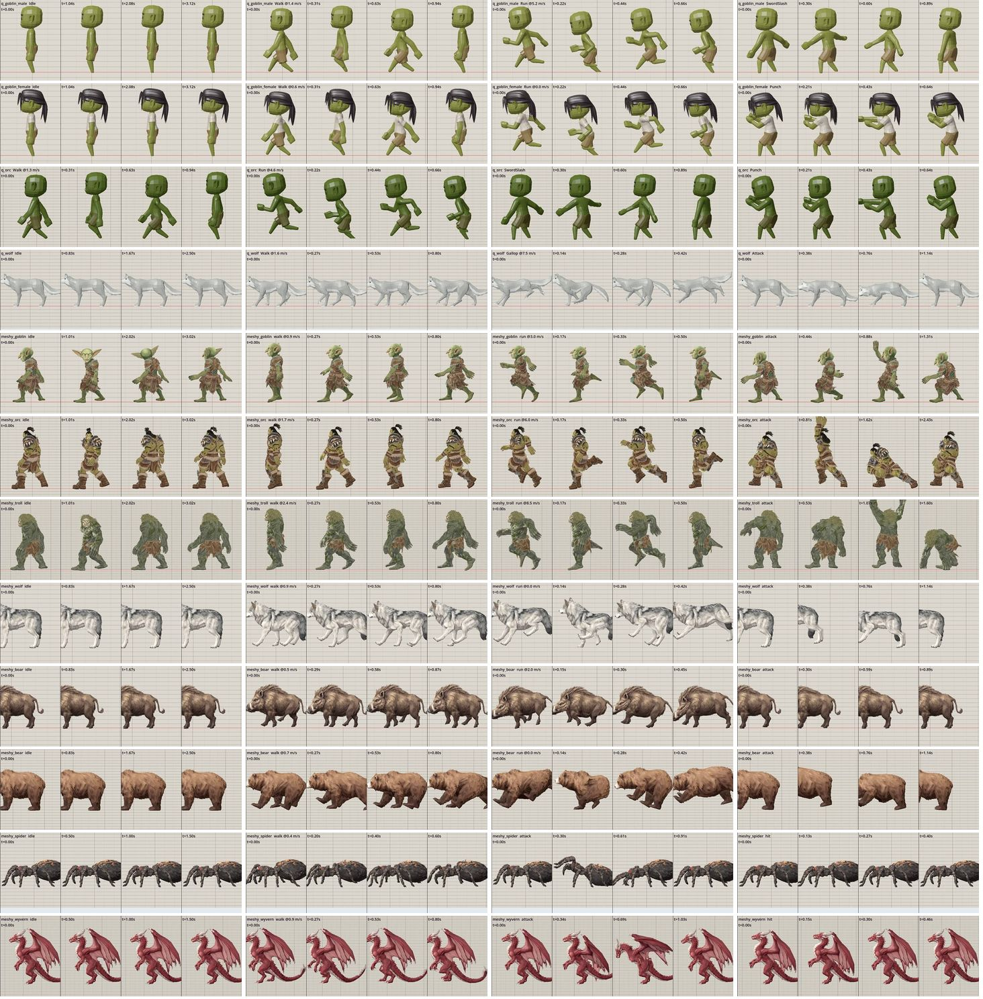
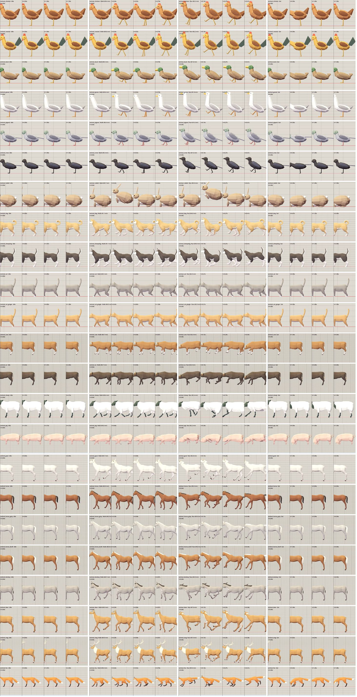

This review compares each actor's scripted movement speed with the measured ground speed of the animation clip played at game scale. It makes the skating and treadmill mismatches sortable by actor and severity. The game already has strong humanoid clips; the main failure is how movement speed and clip speed are coupled.
Target band shown here: game speed / clip ground speed between 0.85× and 1.18×. Foot slip and bad or missing ground contact still need a visual check per rig.
Highest-impact findingFix movement-to-gait matching first. Do not speed up or slow down every actor with one global value: the same UAL walk is close for some rigs and far off for others, and several animal/creature run clips have near-zero measured travel.
Status
Actor
Game speed
Clip
Clip ground speed
Speed ratio
Foot slip (p75)
Observed effect
Source in game
Open the existing visual motion sheets (4 rigs/groups)
Humanoids and villagers · same game-scale sampling used by the QA report.Armored characters · watch boots, cloak hems, and walk/run transitions.

Creatures · Quaternius and Meshy rigs have different stride and retarget behavior.

Animals · gait cadence varies by species; one human speed rule cannot fit these clips.